General Info
pKa is an acid dissociation constant used to describe the acidity of a particular molecule. Its value is directly related to the structure of the given compound. The constant changes depending on the solvent the compound is used in. Typically, organic chemists compare the various values from their determination in water, DMSO and the gas phase and use these to predict a compounds reactivity, solubility, and other physical characteristics. More information on pKa's can be obtained elsewhere (e.g Wikipedia pKa). In short, the stronger the acid, the smaller the pKa value and strong acids have weak conjugate bases. pKa values describe the point where the acid is 50% dissociated (i.e. deprotonated). Below are tables that include determined pKa values for various acids as determined in water, DMSO and in the gas Phase. These tables are compiled in PDF files below.
For a more comprehensive discussion on this topic, please see Acidity and Basicity by professor William Reusch, Michigan State University.
pKa Values in DMSO Compilation (by Reich and Bordwell)
A pKa Values in DMSO Compilation (by Reich and Bordwell) is available as a PDF file.
pKa Values in Water Compilation (by R. Williams)
A pKa Values in Water Compilation (by R. Williams) is available as a PDF file.
pKa Values Compilation (by Dave Evans and D. H. Ripin)
A pKa Values Compilation (by Dave Evans and D. H. Ripin) is available as a PDF file.
- 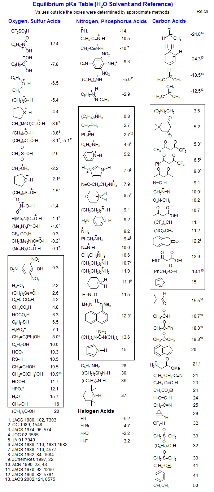
- 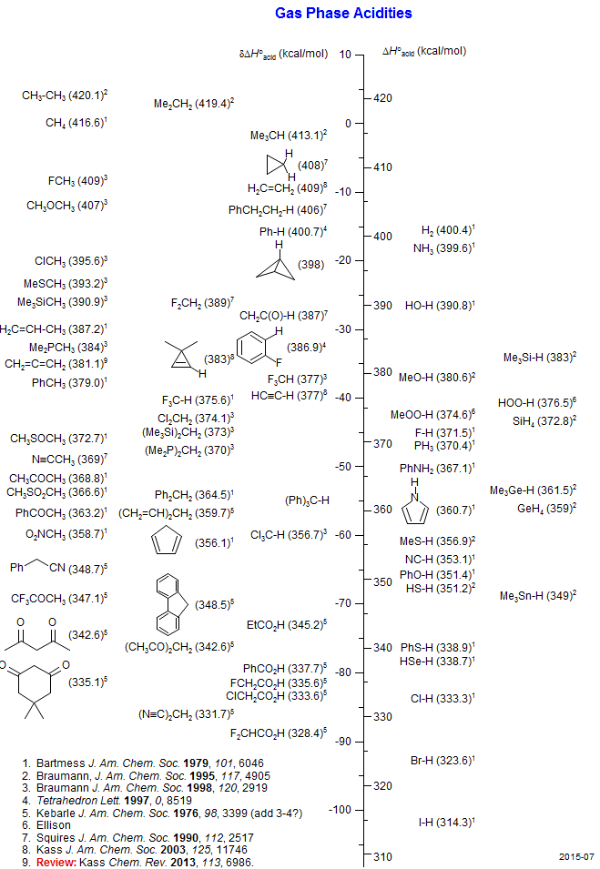
- 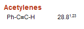
- 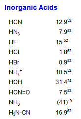
- 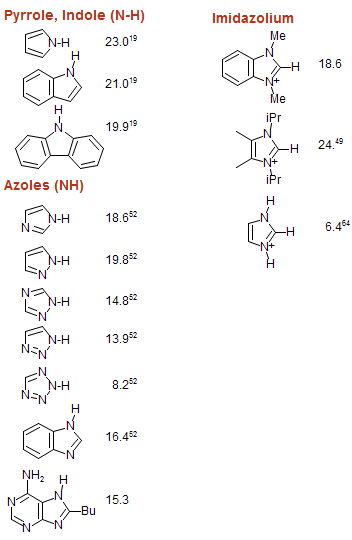
- 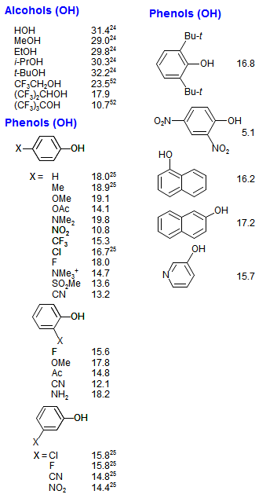
- 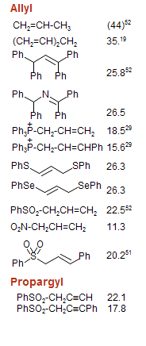
- 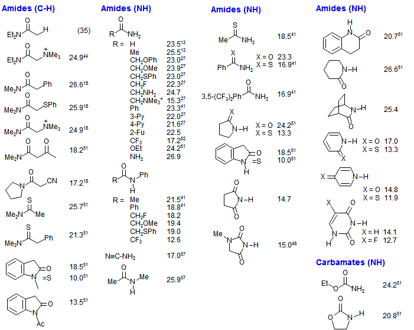
- 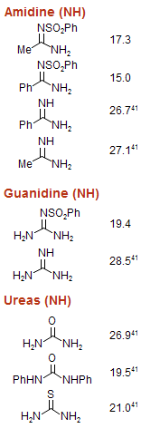
- 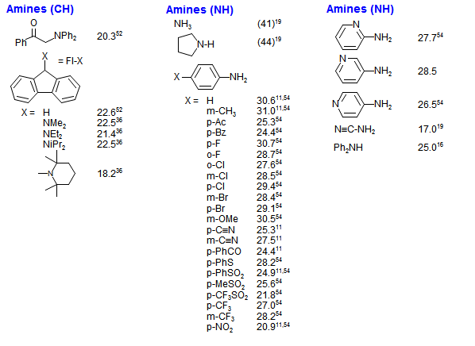
- 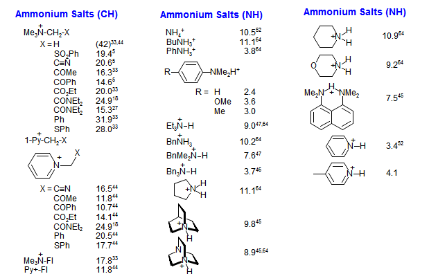
- 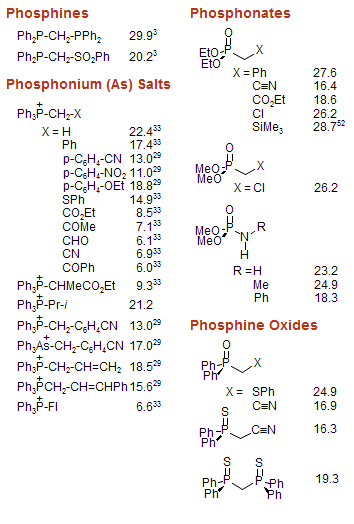
- 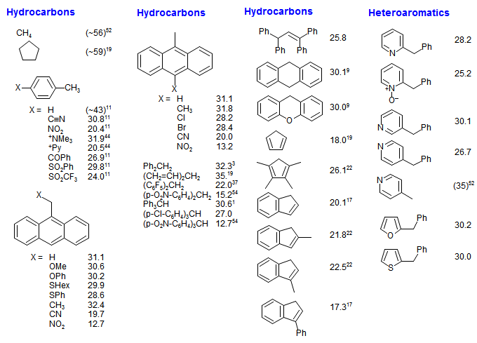
- 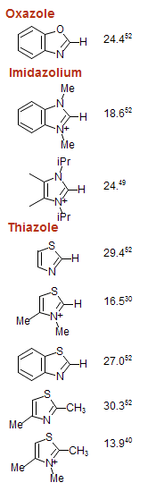
- 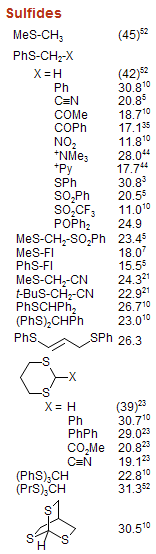
- 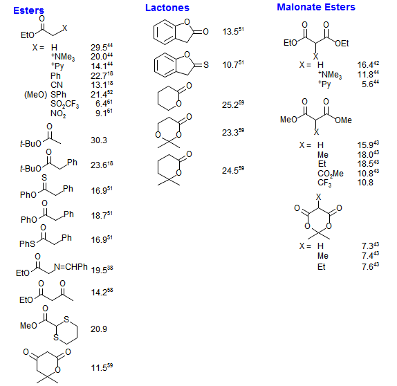
- 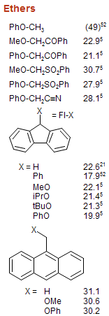
- 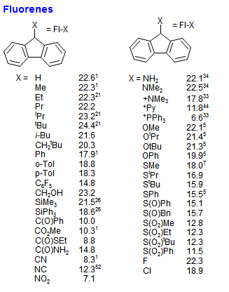
- 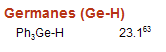
- 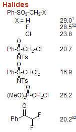
- 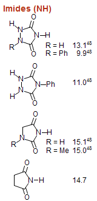
- 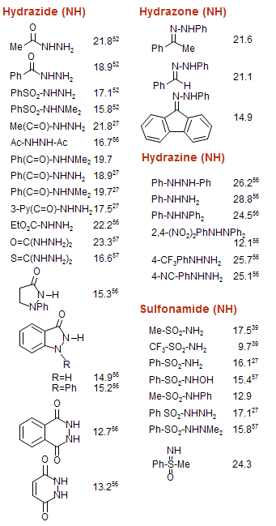
- 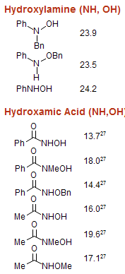
- 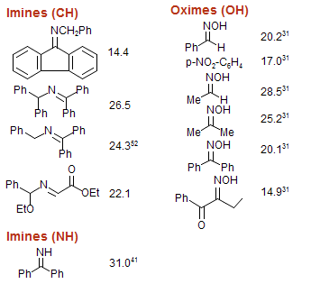
- 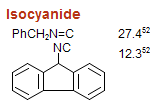
- 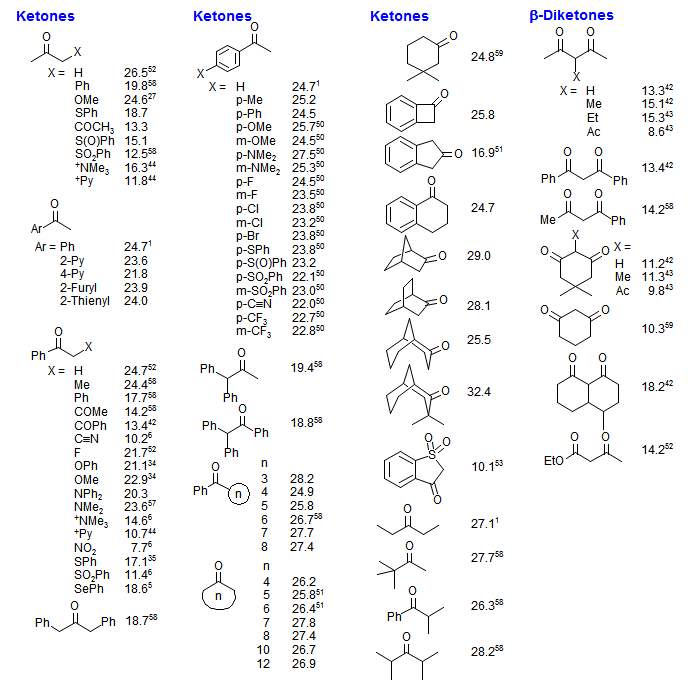
- 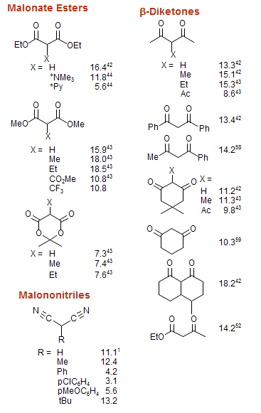
- 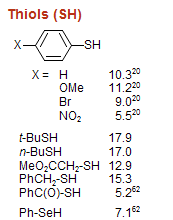
- 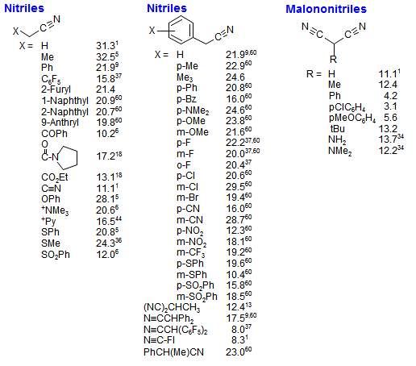
- 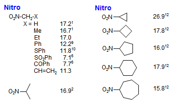
- 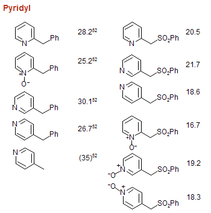
- 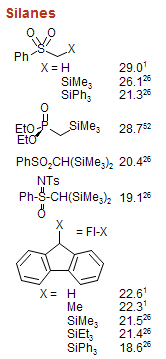
- 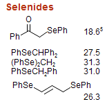
- 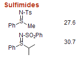
- 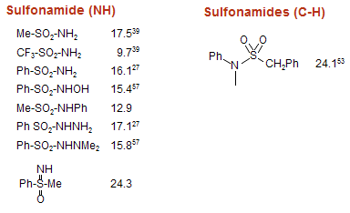
- 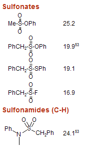
- 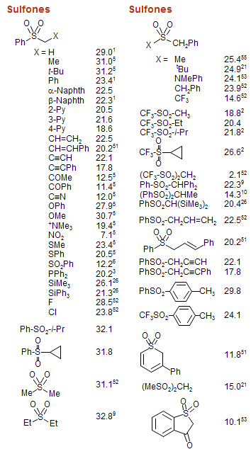
- 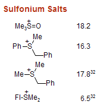
- 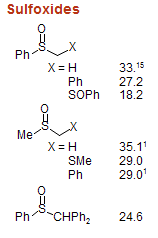
- 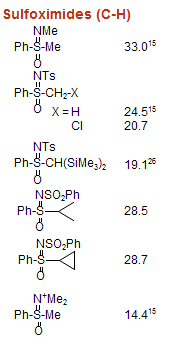
1. J. Am. Chem. Soc. 1975, 97, 7006.
2. J. Am. Chem. Soc. 1975, 97, 7160.
3. J. Am. Chem. Soc. 1975, 97, 442.
4. J. Am. Chem. Soc. 1967, 89, 2752.
5. J. Org. Chem. 1976, 41, 1885.
6. J. Org. Chem. 1976, 41, 1883.
7. J. Org. Chem. 1976, 41, 2786.
8. J. Org. Chem. 1976, 41, 2508.
9. J. Org. Chem. 1977, 42, 321.
10. J. Org. Chem. 1977, 42, 326.
11. J. Org. Chem. 1977, 42, 1817.
12. J. Org. Chem. 1978, 43, 3113.
13. J. Org. Chem. 1978, 43, 3095.
14. J. Org. Chem. 1978, 43, 1764.
15. J. Org. Chem. 1980, 45, 3884.
16. J. Org. Chem. 1980, 45, 3305.
17. J. Org. Chem. 1980, 45, 3325.
18. J. Org. Chem. 1981, 46, 4327.
19. J. Org. Chem. 1981, 46, 632.
20. J. Org. Chem. 1982, 47, 3224.
21. J. Org. Chem. 1982, 47, 2504.
22. J. Am. Chem. Soc. 1983, 105, 6188.
23. J. Am. Chem. Soc. 1986, 108, 7310.
24. J. Org. Chem. 1980, 45, 3295.
25. J. Org. Chem. 1984, 49, 1424.
26. J. Am. Chem. Soc. 1995, 117, 602.
27. J. Org. Chem. 1990, 55, 3330.
28. J. Am. Chem. Soc. 1996, 118, 8777.
29. J. Org. Chem. 1996, 61, 4103.
30. J. Am. Chem. Soc. 1991, 113, 985.
31. J. Org. Chem. 1992, 57, 3019.
32. J. Org. Chem. 1998, 63, 7574.
33. J. Am. Chem. Soc. 1994, 116, 968.
34. J. Am. Chem. Soc. 1989, 111, 7558.
35. J. Am. Chem. Soc. 1992, 114, 7623.
36. J. Am. Chem. Soc. 1994, 116, 973.
37. J. Org. Chem. 1988, 53, 780.
38. J. Am. Chem. Soc. 1988, 110, 8520
39. J. Org. Chem. 1976, 41, 2507.
40. J. Am. Chem. Soc. 1990, 112, 792
41. J. Am. Chem. Soc. 1991, 113, 8398
42. J. Org. Chem. 1980, 45,3299.
43. Arnett J. Am. Chem. Soc. 1984, 106, 6759
44. J. Org. Chem. 1993, 58, 3060.
45. Benoit Can. J. Chem. 1987, 65, 996.
46. Kreevoy J. Phys. Chem. 1977, 81, 1924.
47. Kolthoff J. Am. Chem. Soc. 1968, 90, 23.
48. Bausch J. Org. Chem. 1990, 55, 5806.
49. Alder Chem. Commun, 1995, 1267
50. J. Org. Chem. 1978, 43, 1763.
51. J. Org. Chem. 1991, 56, 4218.
52. Acc. Chem. Res. 1988, 21, 456, 463.
53. J. Org. Chem. 1991, 56, 4448.
54. J. Am. Chem. Soc. 1988, 110, 2964.
55. J. Am. Chem. Soc. 1974, 76, 1214.
56. J. Am. Chem. Soc. 1997, 119, 9125.
57. J. Org. Chem. 1990, 55, 3337.
58. Can. J. Chem. 1990, 68, 1714.
59. Arnett J. Am. Chem. Soc. 1987, 109, 809.
60. J. Phys. Org. Chem. 1988, 1, 209.
61. Terrier J. Org. Chem. 2003, 68, 6566.
62. Courtet-Coupez Bull. Soc. Chim. Fr. 1969, 1033.
63. Curtis J. Am. Chem. Soc. 1969, 91, 6011.
64. Crampton J. Chem. Res. (S) 1997, 22.
All others are F. G. Bordwell, private communication.
For a review, see: F. G. Bordwell Acc. Chem. Res. 1988, 21, 456, 463.